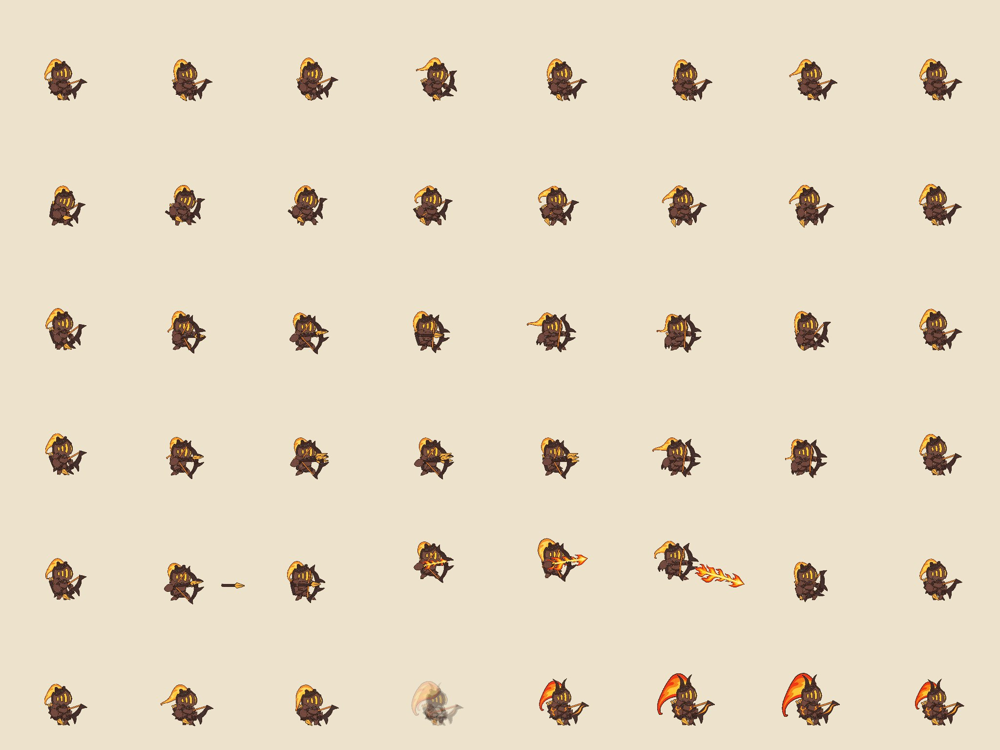
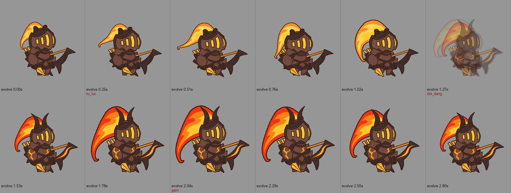
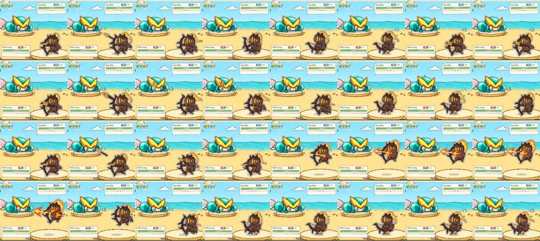
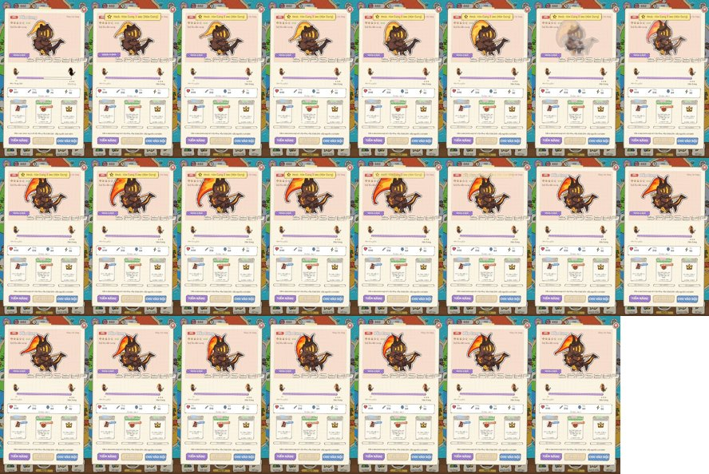
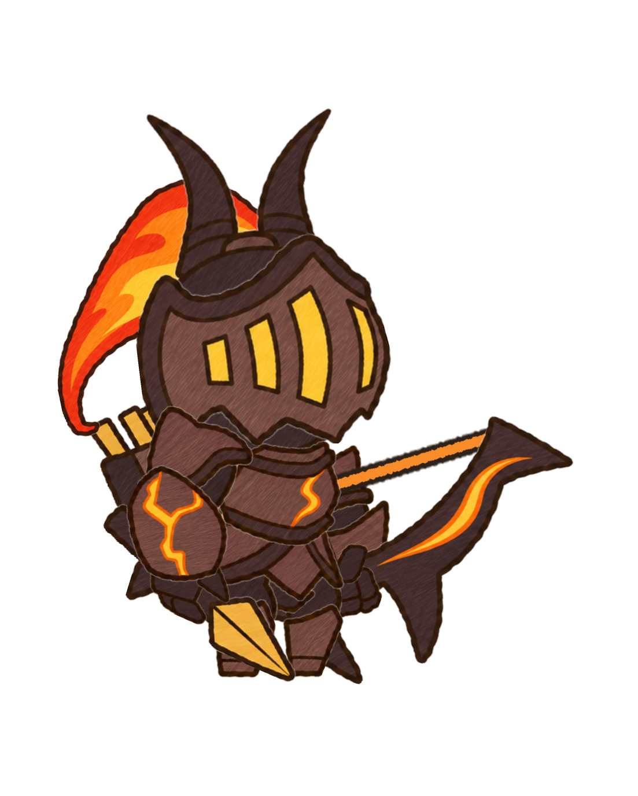
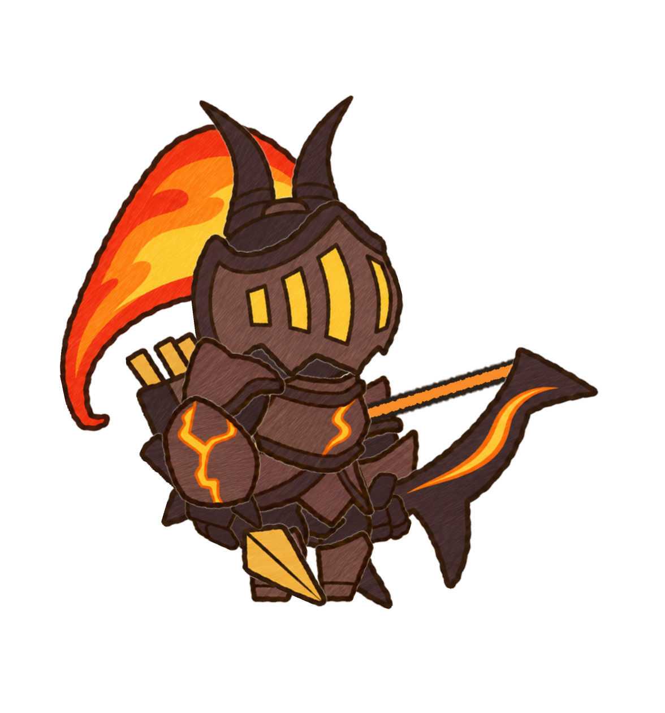
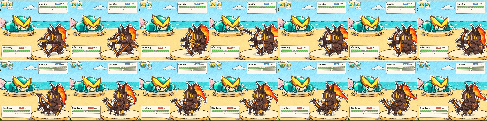
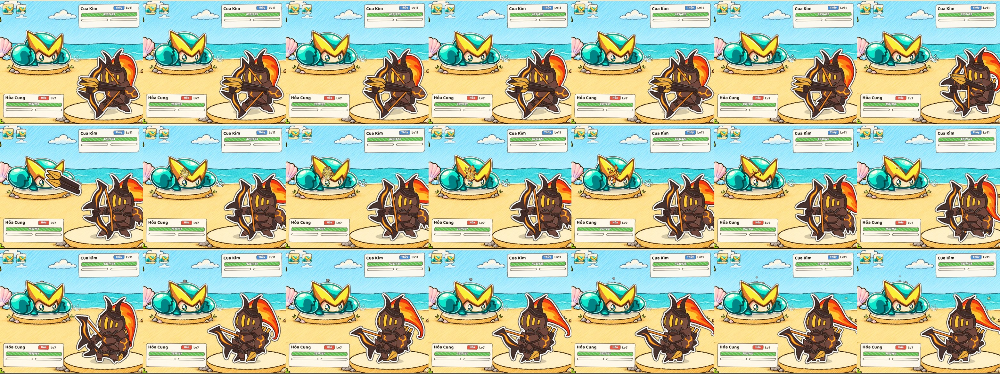
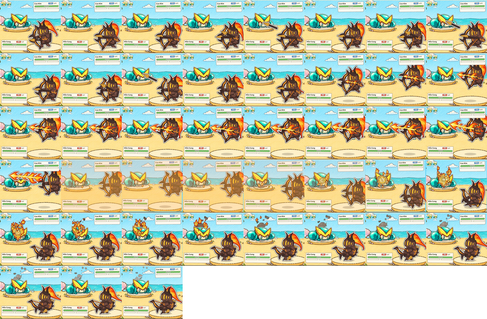

Hỏa Cung (quỷ lửa bắn cung)
0. DẠNG 1 đã làm xong (2026-11-13)
Trang xem có chuyển động (mọi clip, kể cả tiến hóa): rig/xem.html
Dạng 1 qua đường chạy thật của game (hàng: idle, hit, attack, cast, skill, evolve)

Clip tiến hóa: quỷ con bắt lửa, chùm lửa bùng to, đổi dạng, dạng 2 gầm

Dạng 1 ra trận thật (đòn thường, chiêu mana, chiêu cuối; ảnh nhỏ vì cửa sổ Game đang nhỏ)

Bấm Tiến hóa trong hộp chi tiết tướng

1. Concept DẠNG 1 (đã duyệt)
 Dạng 1 (concept C1): sừng cụt, chùm lửa nhỏ, giáp trơn chưa nứt lửa, cung gỗ cháy trơn
Dạng 1 (concept C1): sừng cụt, chùm lửa nhỏ, giáp trơn chưa nứt lửa, cung gỗ cháy trơn

Bố cục dựng từ rig (tỉ lệ dạng 1: đầu × 1,17, chùm lửa × 0,7), còn da dạng 2

Dạng 2 đã duyệt (để so)
2. Dạng 2 trong game (ảnh chụp trận thật, Unity)
Đòn thường: một mũi tên bay tới đối thủ (game lái)

Chiêu mana: ba mũi tên cùng lúc, nổ nhỏ ở đối thủ

Chiêu cuối: ba phát liên tiếp, nhảy lên, tụ mũi tên lửa, bắn, khựng + rung + chớp màn + nổ lớn
